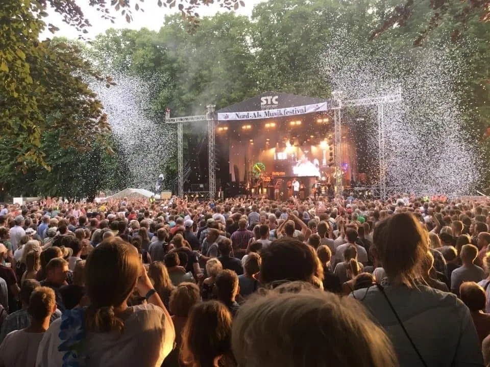
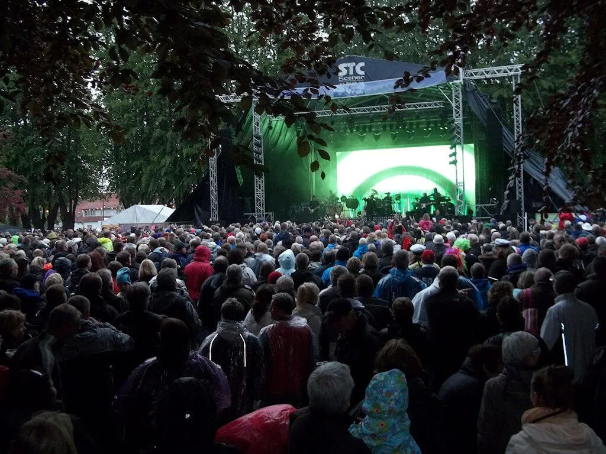
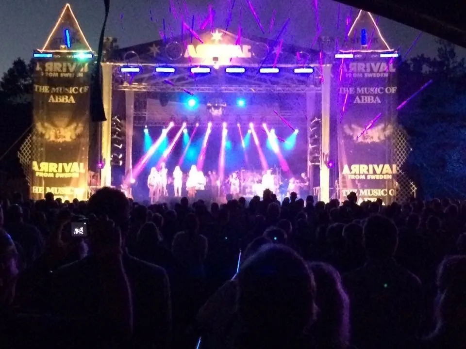
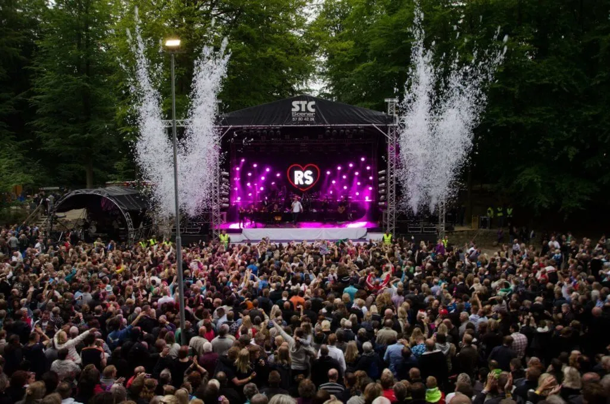

Scener til store events
Store STC Scener
Over 40 års erfaring og et af landets ældste scenefirmaer — det bliver man kun med mange tilfredse kunder.
Scener til store events
Over 40 års erfaring og et af landets ældste scenefirmaer — det bliver man kun med mange tilfredse kunder.
STC Scener er rigtig gode som festival scener, koncertevents og firmafester. Kort sagt scener til store og små events.
Hvis det ønskes kan du få tilbud med lys og lyd i en totalløsning. Lej dit sceneudstyr hos STC til rimelige priser. Alle scenerne er godkendte, efter de nye EUROCODES.
STC Scener har forskellige størrelser. Scenegulvet kan justeres i højden fra 70 cm op til 2 m.
Du kan trygt vælge en STC-Scene. Vi har leveret scener til over 4000 koncerter over hele landet. HUSK STC Scener er gode hvor der ikke er så meget plads eller hvor store tunge køretøjer ikke kan komme ind, vi har lavet rigtig mange speciale scene løsninger, steder hvor det har været svært at komme til.




Læs om vores
Festivalpakke
Dette er vores store festival scene. Her er rigtig god plads. En absolut god og arbejdsvenlig scene til store arrangementer.
Mellemstor scene
Dette er en fleksibel scene, der passer til mange typer arrangementer. En solid og arbejdsvenlig løsning med god plads til både optræden og teknik.
Stor festivalscene
Dette er en stor og solid scene, velegnet til større arrangementer og musikfestivaler. En driftssikker løsning med god plads til både artister og teknik.
Praktisk hjælp
Vi lejer hands ud, der kan løse mange opgaver for jer. Ring til Morten Lind på 40 63 42 24. Hvis du ønsker det, kan vi sætte det hele op for dig, få et tilbud!
Få en
Alt under ét tag
Vi er gerne behjælpelige med anskaffelse af mobile toiletter, telte, generatorer og lys og lyd i en totalløsning. Vi kan hjælpe dig med det hele.
Mange vælger at få en totalløsning fra STC, så skal du kun tale med en mand – Morten Lind. 40 63 42 24.
STC giver dig gerne et tilbud på en hel pakke, hvor alt er med til jeres event.
Vi lejer også meget gerne kun scene ud til jer. Da STC har arbejdet med det her i over 30 år, har vi set og hørt meget — hvis du har brug for hjælp, så brug STC som konsulent.
Spar mere ved
Rabat ved større ordrer
Vi er gerne behjælpelige med anskaffelse af mobile toiletter, telte, generatorer og lys og lyd i en totalløsning. Vi kan hjælpe dig med det hele.
Mange vælger at få en totalløsning fra STC, så skal du kun tale med en mand – Morten Lind. 40 63 42 24.
STC giver dig gerne et tilbud på en hel pakke, hvor alt er med til jeres event.
Vi lejer også meget gerne kun scene ud til jer. Da STC har arbejdet med det her i over 30 år, har vi set og hørt meget — hvis du har brug for hjælp, så brug STC som konsulent.
Vigtigt at vide
Lovgivning og sikkerhed
Efter de nye regler kan det af og til være nødvendigt ved dårligt vejr for arrangøren at skaffe mere ballast til scener. Krav til scener bliver større og større og det gør arbejdets opgave også. Det er meget vigtigt, at man som arrangør sætter de nødvendige ressourcer af til sceneområdet. Der er kommet en lang række nye krav som arrangørerne også skal leve op til — husk det.
Skræddersyet løsning
Tilpassede løsninger
Vi kan også lave en sceneløsning hvor to 12×12 m eller 15×15 m scener står ved siden af hinanden. Indhent tilbud.
Alle priser på scener er ekskl. moms.
Har du ikke mulighed for at skaffe frivillige, så få et godt tilbud hvor STC sørger for mandskab til opstilling og nedtagning af scene, alt udstyr og tilbehør.
Alle vores scener leveres med nye brandgodkendte presenninger fremstillet i Danmark. Alle vores sikkerhedsting bliver godkendt hver 12. måned.
De 4 nævnte er standardmål. Skulle du imidlertid være interesseret i andre størrelser og/eller udformninger, vil det med vores udstyr være muligt at sammensætte specielle scener.
Sikkerhed og ansvar
Professionel opsætning
Det er vigtigt, at arbejdsforholdene er i orden, og at det nødvendige mandskab er til rådighed ved opbygning af større scener.
Vi sikrer sammen, at gældende regler overholdes, så arrangementet gennemføres sikkert og professionelt.
STC overholder alle krav og rådgiver jer gennem hele processen, så vi skaber et succesfuldt event.
Ekstraudstyr til din scene
Udstyr og tilbehør
Alt det ekstra udstyr du behøver til et komplet sceneopstilling.
Kunstnere vi har arbejdet med
A Friend in London · Abba Show · Alphabeat · Aura · ARRIVAL from Sweden (The Biggest ABBA Show) · B-Boys · Back in Black · Back to Back · Bamses Venner · Beth Hart · Big Fat Snake · Bill Wyman & The Rhythm Kings · Blues Brothers · Blå Øjne · Brødrene Olsen · Burhan G · Chris Norman · Christoffer · Cowgirls · D.A.D · Dan Baird and Friends of Georgia Satellites · Danmarks Underholdnings Orkester · Danser med Drenge · De Glade Sømænd · Dizzy Mizz Lizzy · Dodo and the Dodo's · Dr. Hook and the Medicine Show · Dune · Ester Brohus · Gnags · Grand Avenue · Hanne Boel · Hermes House Band · High Way Jam · Hot Chocolate · Hotel Hunger · Hush · Hvide Løgne · Infernal · Jeff Healey Band · Johnny Deluxe · Johnny Madsen · Johnny Nørmølle & Nordfolk · Johns Guld · Jokeren · Kato · Karl Herman's Trio · Kashmir · Killer Queen · Kim Larsen · Kim Larsen Jam · L.O.C · Lars Lilholt · Lars Lilholt Band · Le Freak · Led Zeppelin Jam · Lis Sørensen · LOTA (Lords of the Atlas) · Mads Langer · Maggie Reilly · Magtens Korridorer · Manfred Mann's Earthband · Marie Frank · Mc Ejnar · Mek Pek · Michael Falch · Michael Learns to Rock (MLTR) · Middle of the Road · Mike Andersen Band · Moonjam · Muddi & Salamidrengene · Nice Little Penguins · Nik og Jay · Outlandish · Party Animals · Peter Brander · Peter og De Andre Kopier · Pink Floyd Projekt · Poul Halberg Band · Poul Krebs · PS12 (På Slaget 12) · Puls · Queen Machine · Rasmus Nøhr · Rasmus Seebach · Rock Nalle & Band · Runrig · Safri Duo · Samantha Fox · Sanne Salomonsen · Savage Rose · Sebastian · Shit Kid · Showaddywaddy · Shu-Bi-Dua · Slade · Smokie · Soap · Sonny & Gigi · Sort Sol · Status Quo · Sting Jam · Suspect · Sussi og Leo · Suzi Quatro · Sweet · Sweethearts · Sys Bjere · Søren Poppe (Rollo og King) · Søren Sko · Tamra Rosanes · The Orchestra (ELO) · The Powls · The Rubettes feat. Allan Williams · The Searchers · Thomas Helmig · Tom Duke Box · Tue West · Turn on Tina · TV2 · Walkers · Zididada · Østkyst Hustlers
Ring direkte til Morten Lind — eller send os en besked, så vender vi hurtigt tilbage.